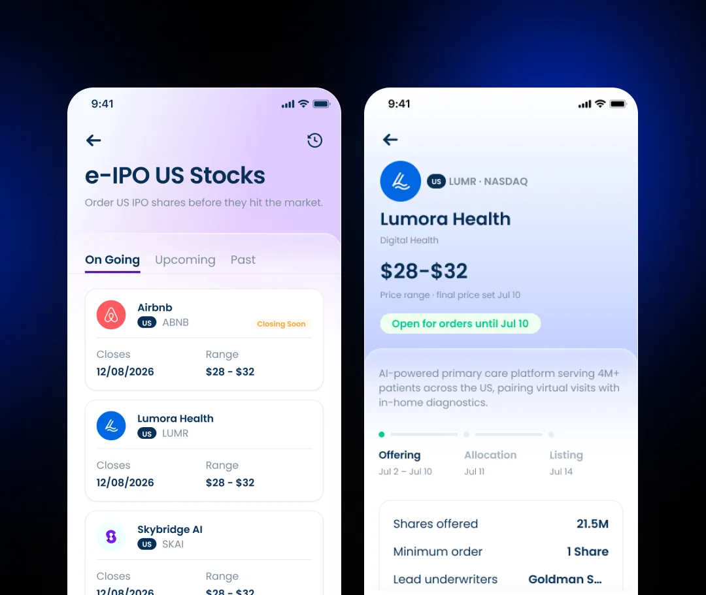
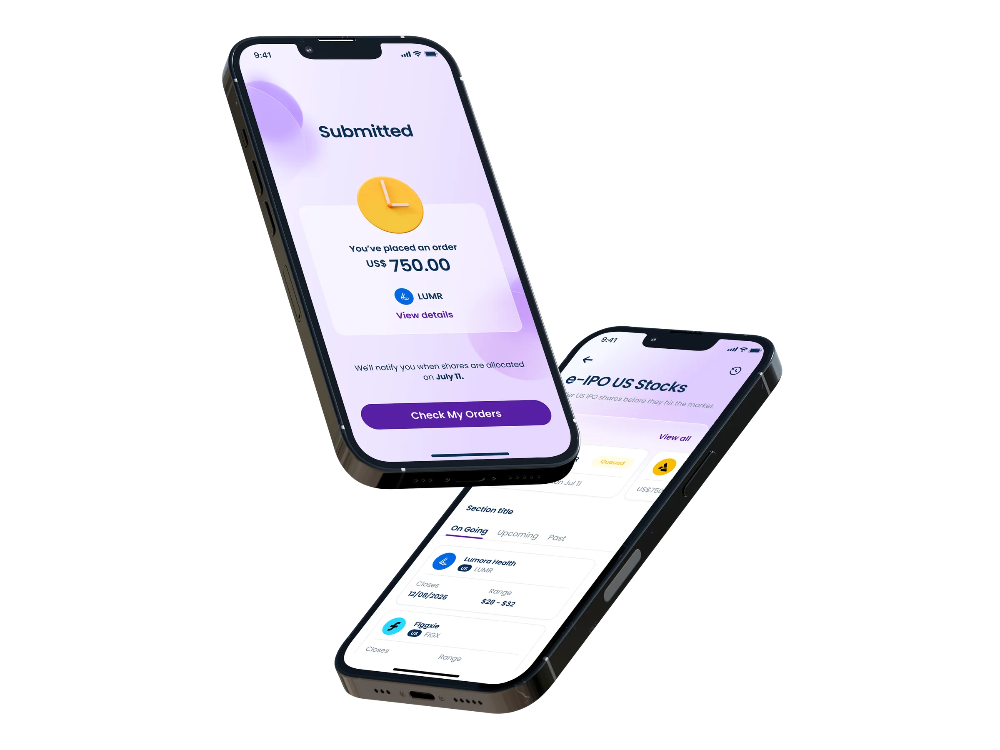
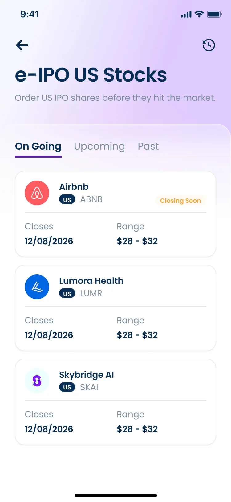
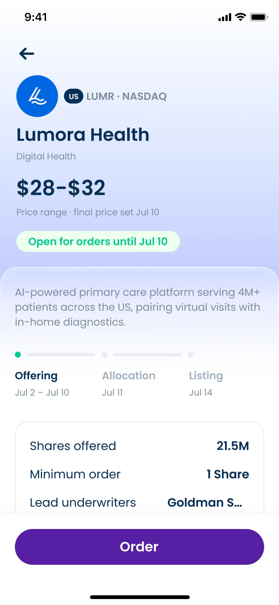
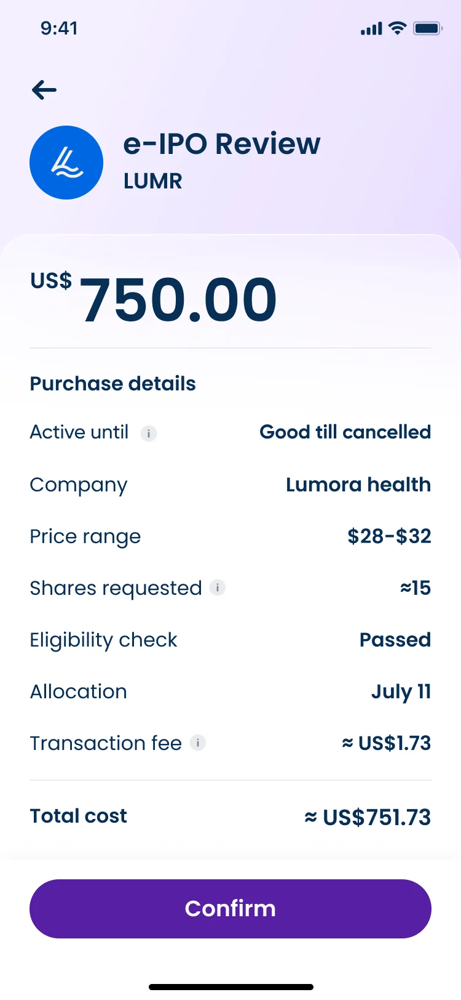
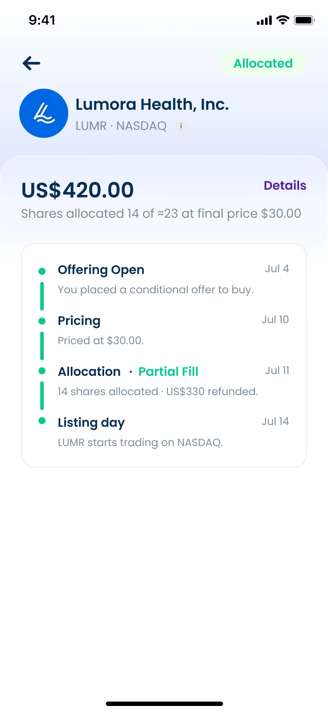

Nanovest US Stocks IPO
Reserve part of a US company's IPO days before it lists, against a price range instead of a number, and let Nanovest settle the difference the moment shares are allocated.
Visit nanovest.io- Client
- Sector
- Role
- Team
- Period
- Surface

Overview
Nanovest could only sell a US stock once it was already trading. A company mid-IPO, still working through a price range days before its first trade, had no order screen at all: someone could only wait, then buy it at whatever multiple the market set on day one.

Scope
- 01Stakeholder interviews
- 02Competitive teardown
- 03Regulatory & eligibility review
- 04Offering-lifecycle mapping
- 05User flows
- 06Wireframes
- 07Interface design
- 08Pricing & fee copy
- 09Allocation & refund states
- 10Prototyping
- 11Design QA
Problem
There was nowhere to ask for a stock before it existed on the market.
Every order screen in the app assumed a live ticker: type a company, see a price, buy at market. A company still mid-IPO, its shares priced only as a range and its first trade still days away, had no detail screen, no order button, nowhere in search: it simply wasn't tradable yet.
High-profile US IPOs are rare and time-boxed: a handful a year, each with a window that opens and shuts before the stock ever lists. Missing that window meant waiting for the ordinary listing day and buying in at whatever the market decided to charge for it.
Research
An IPO order is a bet on a price nobody knows yet.
I looked at how Robinhood and SoFi handle IPO access, and at how investors in Indonesia already know the idea from local e-IPO apps. For each one I asked three questions: what does the person see before they commit, what happens to their money while the offering is open, and how do they find out what they actually got? I also mapped the stages of a typical US IPO, from open to pricing, allocation, and listing, to see which moments a retail investor can see and which stay hidden.
The gap I wanted to close was not another form field. An IPO order commits money against a price that does not exist yet, and the answers to those three questions usually arrive after the commitment, not before it. So I decided the order would show its whole timeline from the first screen, and that the money story (what is held, what is refunded, and when) would be stated in plain words at every step.
Brainstorm
I put a rough flow in front of other designers before polishing anything.
I ran a quick sync with fellow UX designers over Google Meet and walked them through a first wireframe of the IPO flow: the entry from US Stocks, the IPO list, and an individual offering page. The draft deliberately followed the pattern of Nanovest's existing limit buy flow, so the group could judge the new parts against something everyone already knew. I asked where the flow felt unfamiliar, what was missing, and what could be removed.
The session settled the shape of the flow before any visual design. Reusing the limit buy pattern stayed, because it kept the order step familiar. The offering page took on the extra job of explaining how an IPO works, with its dates and a short how-it-works block.
Approach
A price range in, a price range out: one order that settles itself.
The e-IPO list groups every offering by On Going, Upcoming, Past, so the one fact that actually changes a decision, how many days are left to order, is visible before anyone taps into a single company.
The order commits a dollar amount against the company's published range, not a share count, because the final price isn't set until the offering closes. A review screen states plainly what that money buys: an estimated share count, a transaction fee, and a total charged today.
Allocation is the step every other order type in the app skips entirely. A timeline carries the whole lifecycle: offer placed, priced, allocated in full or in part, listed, and states the exact refund the moment a partial fill leaves money unspent, so nobody has to ask support where the rest of it went.
Screens



